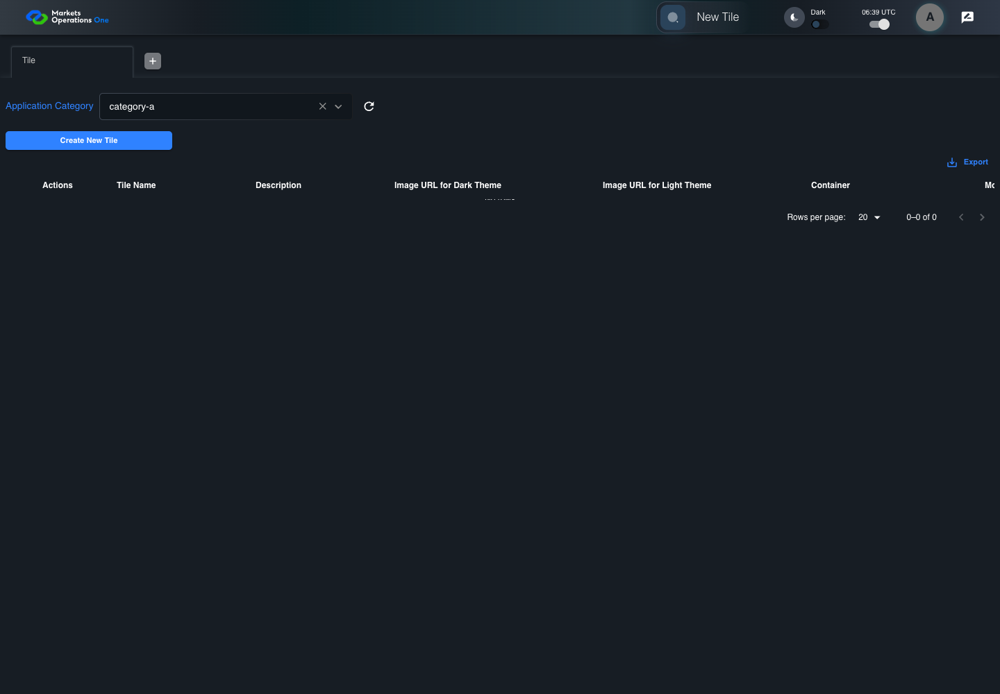
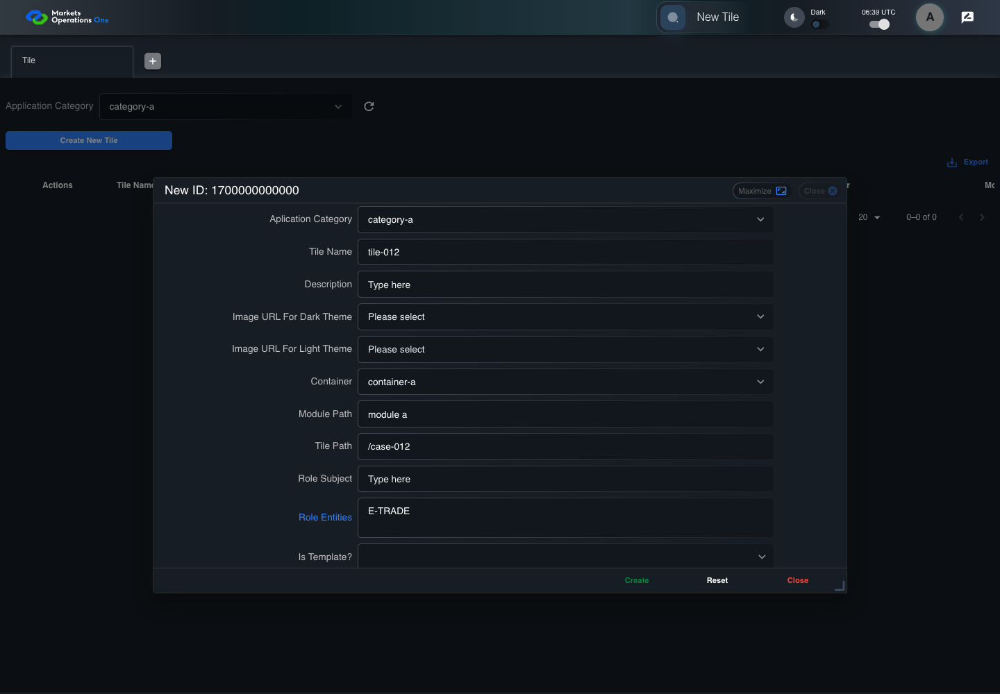
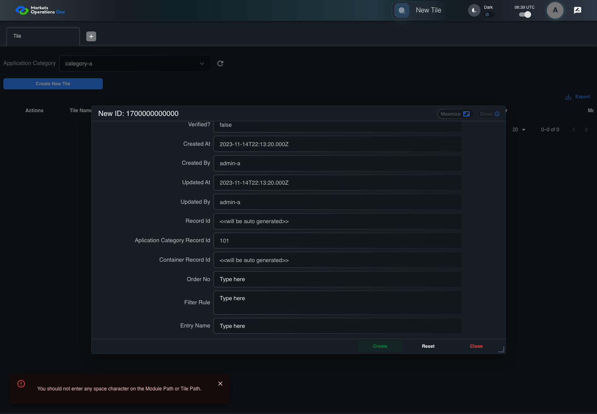

BFF-ADM-012 current BFF administration through actual UI
PASS · application/run-072/bff-adm-012-current-bff-administration-through-actual-ui-95d573d04b15-attempt-1 · ACTUAL_APPLICATION_LOCAL_SERVICES
Actual current React and exact-current BFF admin controllers/services/JPA with actual migration DDL in disposable PostgreSQL. Controlled OUD/EMS2 identities and local Spring bootstrap. Fixture SQL seeds/mutates isolated records; service errors are actual database errors. Undefined agreed messages remain unresolved acceptance.
2026-10-22T06:39:21.139Z to 2026-10-22T06:39:27.547Z
Assertions and result · Artifact manifest · Exact run inputs and source hashes
Result SHA-256:f1fa630a36603db90133360594a029de68e96265e653f87e677fe9b49fc9e6cfMachine observations
- actual-identity-projection.json
b6d6bd7fda600cdef2c1dbb88646780a89aa6ca727d4fed4acdd8cb52c0360aa - baseline-inputs.json
14d2cb9313a31f0ba0753727efb4f5742c18b249c2107fd5788169ca3a538f07 - bff-boundary.json
bc6f112058bf5bbbad363d4a53b1d2bcfc4fd2b45293e5d41019db27738bbf02 - committed-ui-submission-comparisons.json
e1e10fa78a0cc374cbdce4af3df23e9aed106a995675dae586a0a5059cb646c6 - creation-clock.json
e267fd1fb19d1a7506981de080dcb7f0343eb7d9d4f59c44144a93d7826ccb21 - empty-filter-rule-representation.json
7ae2af94ab7ea32b1bedf162e0e3fb848eb4c0835a4a9fad2dbd44d513fbd268 - fixture-step-10.json
2eaa7cd69010458071c188d8ad340668ed6f6a13719892951b31da4003d2492c - fixture-step-11.json
a61bf8362b22e5c71ba0d8f6d93cdef20fe8bace785e4f27f4e37eb1f469d860 - fixture-step-6.json
b82b8d5f78c22c1110331f01fd8aba2902fad8e120738eeba93ff889af4ef478 - fixture-step-7.json
d6d8691908152b512d4ce493befc9566499ea0dbae89ae43bbb0972994f2a602 - fixture-step-8.json
30f5d5e485eb05d1df3e90b7f65c9405778a3cf26a4f313db324a0de28730a79 - fixture-step-9.json
c865de282190ddcaeb6bfa95bd39676beb094efaddaf5c76a889fda767847250 - initial-persisted-records.json
02a76a52b17fe157403fb964245a5887c5047ed162ad57c24ae4074276f31756 - persisted-after-submit.json
7cc2bf47427d91114d305af710585b2e01537b24a0afaabb00bbf4e3b9176590 - reference-snapshot-3.json
17281267cc1b0984b6231349c0fc4526d31d91745e5805a692bcc925a4a4c53b - reference-snapshot-4.json
2ce7336cdcb5d1b14da83ed9d51c1819d6a370d00515c544e4f744cac65a066a - ui-origin-bff-requests.json
75ec2939cf4f8a3e073f98766ea2ad065148f2b2bdfc623bd861331708470cb4
Screenshot capture: CAPTURED. Named frames: 25.
Step screenshot evidence: COMPLETE. 24/24 canonical steps have execution screenshots.
Canonical step timeline
Given Admin A uses subject "admin-a" with role "FMO_ADMIN" in an isolated authenticated browser
Execution: PASSED.
1. step-01 Visible state after step 1: Given Admin A uses subject "admin-a" with role "FMO_ADMIN" in an isolated authenticated browser
2026-10-22T06:39:22.905Z · 1440×1000
Step: /Users/lushevol/code/github/ratan-release-impact/workbench/tasks/ui-test-coverage-20261022/test-cases.md:15116
SHA-256:eec5872632406774f1e3e79de8a07c7249836241108ba771cff133ac015434d3And the controlled Tile fixture records the initial grid rows and persisted values
Execution: PASSED.
2. step-02 Visible state after step 2: And the controlled Tile fixture records the initial grid rows and persisted values
2026-10-22T06:39:23.023Z · 1440×1000
Step: /Users/lushevol/code/github/ratan-release-impact/workbench/tasks/ui-test-coverage-20261022/test-cases.md:15117
SHA-256:8981f23155a955bd889f87b5d7fcafbd6ca0da538567d51a37c43a995c599cf8And Category 101 has label "category-a" and Import Map 201 has Module Name "container-a"
Execution: PASSED.
3. step-03 Visible state after step 3: And Category 101 has label "category-a" and Import Map 201 has Module Name "container-a"
2026-10-22T06:39:23.054Z · 1440×1000
Step: /Users/lushevol/code/github/ratan-release-impact/workbench/tasks/ui-test-coverage-20261022/test-cases.md:15118
SHA-256:6e45dc27b67ab3efb3d9280ff61fee72e58757001c21c3fadc1594e9b3f38f7aAnd both references belong to "FMO_ADMIN" and the Tile page category filter value is Category 101
Execution: PASSED.
4. step-04 Visible state after step 4: And both references belong to "FMO_ADMIN" and the Tile page category filter value is Category 101
2026-10-22T06:39:23.088Z · 1440×1000
Step: /Users/lushevol/code/github/ratan-release-impact/workbench/tasks/ui-test-coverage-20261022/test-cases.md:15119
SHA-256:6e45dc27b67ab3efb3d9280ff61fee72e58757001c21c3fadc1594e9b3f38f7aAnd the controlled creation clock returns 1700000000000 milliseconds
Execution: PASSED.
5. step-05 Visible state after step 5: And the controlled creation clock returns 1700000000000 milliseconds
2026-10-22T06:39:23.120Z · 1440×1000
Step: /Users/lushevol/code/github/ratan-release-impact/workbench/tasks/ui-test-coverage-20261022/test-cases.md:15120
SHA-256:165b3043054d4699293501830517c4b5a2d3fe02386c7a9246d7df39b9307ae6And the baseline fixture data defines "Tile Name" as "tile-012"
Execution: PASSED.
6. step-06 Visible state after step 6: And the baseline fixture data defines "Tile Name" as "tile-012"
2026-10-22T06:39:23.154Z · 1440×1000
Step: /Users/lushevol/code/github/ratan-release-impact/workbench/tasks/ui-test-coverage-20261022/test-cases.md:15121
SHA-256:165b3043054d4699293501830517c4b5a2d3fe02386c7a9246d7df39b9307ae6And the baseline fixture data defines "Module Path" as "/fixture"
Execution: PASSED.
7. step-07 Visible state after step 7: And the baseline fixture data defines "Module Path" as "/fixture"
2026-10-22T06:39:23.188Z · 1440×1000
Step: /Users/lushevol/code/github/ratan-release-impact/workbench/tasks/ui-test-coverage-20261022/test-cases.md:15122
SHA-256:883034f63985c6ca077afe7182752ff7401decbb7891dae8e3e80f61e8062601And the baseline fixture data defines "Tile Path" as "/case-012"
Execution: PASSED.
8. step-08 Visible state after step 8: And the baseline fixture data defines "Tile Path" as "/case-012"
2026-10-22T06:39:23.222Z · 1440×1000
Step: /Users/lushevol/code/github/ratan-release-impact/workbench/tasks/ui-test-coverage-20261022/test-cases.md:15123
SHA-256:883034f63985c6ca077afe7182752ff7401decbb7891dae8e3e80f61e8062601And the baseline fixture data defines "Role Entities" as "E-TRADE"
Execution: PASSED.
9. step-09 Visible state after step 9: And the baseline fixture data defines "Role Entities" as "E-TRADE"
2026-10-22T06:39:23.254Z · 1440×1000
Step: /Users/lushevol/code/github/ratan-release-impact/workbench/tasks/ui-test-coverage-20261022/test-cases.md:15124
SHA-256:18cc7acb1e891ce228da1bf0e5c353c2ef60485b135ee88a1c1d9c603e614846And the baseline fixture data defines "Filter Rule" as ""
Execution: PASSED.
10. step-10 Visible state after step 10: And the baseline fixture data defines "Filter Rule" as ""
2026-10-22T06:39:23.288Z · 1440×1000
Step: /Users/lushevol/code/github/ratan-release-impact/workbench/tasks/ui-test-coverage-20261022/test-cases.md:15125
SHA-256:18cc7acb1e891ce228da1bf0e5c353c2ef60485b135ee88a1c1d9c603e614846And the baseline Tile references use "Aplication Category" "category-a" and "Container" "container-a"
Execution: PASSED.
11. step-11 Visible state after step 11: And the baseline Tile references use "Aplication Category" "category-a" and "Container" "container-a"
2026-10-22T06:39:23.331Z · 1440×1000
Step: /Users/lushevol/code/github/ratan-release-impact/workbench/tasks/ui-test-coverage-20261022/test-cases.md:15126
SHA-256:27a1caed333d287c3697e871f3ecab67d2c0f34e15862dfe74dbf1b64c17033bWhen Admin A clicks the button labeled "Create New Tile" on the Tile administration page
Execution: PASSED.
12. step-12 Visible state after step 12: When Admin A clicks the button labeled "Create New Tile" on the Tile administration page
2026-10-22T06:39:23.587Z · 1440×1000
Step: /Users/lushevol/code/github/ratan-release-impact/workbench/tasks/ui-test-coverage-20261022/test-cases.md:15127
SHA-256:04fd13012be555833dc9aca5a6d53642ff84974fc578bd70836e5443ef5031a2Then the dialog titled "new ID: 1700000000000" is visible on the Tile administration page
Execution: PASSED.
13. step-13 Visible state after step 13: Then the dialog titled "new ID: 1700000000000" is visible on the Tile administration page
2026-10-22T06:39:23.646Z · 1440×1000
Step: /Users/lushevol/code/github/ratan-release-impact/workbench/tasks/ui-test-coverage-20261022/test-cases.md:15128
SHA-256:57799736e2c6fd03b703f34ab7d282e79f32dd02e600d00f0c59af1e5167c170When Admin A clicks the combobox labeled "Container" in dialog "new ID: 1700000000000"
Execution: PASSED.
14. step-14 Visible state after step 14: When Admin A clicks the combobox labeled "Container" in dialog "new ID: 1700000000000"
2026-10-22T06:39:23.925Z · 1440×1000
Step: /Users/lushevol/code/github/ratan-release-impact/workbench/tasks/ui-test-coverage-20261022/test-cases.md:15129
SHA-256:e5d8854d63735b2f22141ebb0c8e124df165b09d42896d7c829b2a5089145465And Admin A clicks the option labeled "container-a" in the expanded "Container" listbox for dialog "new ID: 1700000000000"
Execution: PASSED.
15. step-15 Visible state after step 15: And Admin A clicks the option labeled "container-a" in the expanded "Container" listbox for dialog "new ID: 1700000000000"
2026-10-22T06:39:24.438Z · 1440×1000
Step: /Users/lushevol/code/github/ratan-release-impact/workbench/tasks/ui-test-coverage-20261022/test-cases.md:15130
SHA-256:e61940af594f16e72db8a461f3d4c999859344a468a536f7035b8a7fc11b42e1And Admin A fills the textbox labeled "Tile Name" with "tile-012" in dialog "new ID: 1700000000000"
Execution: PASSED.16. step-16 Visible state after step 16: And Admin A fills the textbox labeled "Tile Name" with "tile-012" in dialog "new ID: 1700000000000"
2026-10-22T06:39:24.861Z · 1440×1000
Step: /Users/lushevol/code/github/ratan-release-impact/workbench/tasks/ui-test-coverage-20261022/test-cases.md:15131
SHA-256:8cae88d83a4bac446283ad99380fab8777f04647c0a8bd084c8d9cfa4a7c12e6And Admin A fills the textbox labeled "Module Path" with "module a" in dialog "new ID: 1700000000000"
Execution: PASSED.17. step-17 Visible state after step 17: And Admin A fills the textbox labeled "Module Path" with "module a" in dialog "new ID: 1700000000000"
2026-10-22T06:39:25.289Z · 1440×1000
Step: /Users/lushevol/code/github/ratan-release-impact/workbench/tasks/ui-test-coverage-20261022/test-cases.md:15132
SHA-256:aa65f09eeac80127cd127eca249ea380f98c261220b4fc443a707aaf0da44a0bAnd Admin A fills the textbox labeled "Tile Path" with "/case-012" in dialog "new ID: 1700000000000"
Execution: PASSED.18. step-18 Visible state after step 18: And Admin A fills the textbox labeled "Tile Path" with "/case-012" in dialog "new ID: 1700000000000"
2026-10-22T06:39:25.716Z · 1440×1000
Step: /Users/lushevol/code/github/ratan-release-impact/workbench/tasks/ui-test-coverage-20261022/test-cases.md:15133
SHA-256:34cd27ae2eb5237728855909893f6437424fcbeef670f2ef6aa939aab81ba9d7And Admin A fills the textarea labeled "Role Entities" with "E-TRADE" in dialog "new ID: 1700000000000"
Execution: PASSED.
19. step-19 Visible state after step 19: And Admin A fills the textarea labeled "Role Entities" with "E-TRADE" in dialog "new ID: 1700000000000"
2026-10-22T06:39:26.141Z · 1440×1000
Step: /Users/lushevol/code/github/ratan-release-impact/workbench/tasks/ui-test-coverage-20261022/test-cases.md:15134
SHA-256:2751f0c71837d85a4f8bb4cdd175abaf1dc3659425a910e48884e99dcd4650cbAnd Admin A fills the textarea labeled "Filter Rule" with "" in dialog "new ID: 1700000000000"
Execution: PASSED.
20. step-20 Visible state after step 20: And Admin A fills the textarea labeled "Filter Rule" with "" in dialog "new ID: 1700000000000"
2026-10-22T06:39:26.572Z · 1440×1000
Step: /Users/lushevol/code/github/ratan-release-impact/workbench/tasks/ui-test-coverage-20261022/test-cases.md:15135
SHA-256:e69c3eaeac3508be6447cedd7e26b30f0e9c276abeb2fd2922b928773bb90e4bAnd Admin A clicks the button labeled "Create" in dialog "new ID: 1700000000000"
Execution: PASSED.
21. step-21 Visible state after step 21: And Admin A clicks the button labeled "Create" in dialog "new ID: 1700000000000"
2026-10-22T06:39:26.830Z · 1440×1000
Step: /Users/lushevol/code/github/ratan-release-impact/workbench/tasks/ui-test-coverage-20261022/test-cases.md:15136
SHA-256:9532e7525b6829888b7fd845c67d5ed94fdcf7dc7b240f3a55053ecfeeccc5d5Then the dialog titled "new ID: 1700000000000" remains visible on the Tile administration page
Execution: PASSED.22. step-22 Visible state after step 22: Then the dialog titled "new ID: 1700000000000" remains visible on the Tile administration page
2026-10-22T06:39:26.881Z · 1440×1000
Step: /Users/lushevol/code/github/ratan-release-impact/workbench/tasks/ui-test-coverage-20261022/test-cases.md:15137
SHA-256:2814612e51cd954909b9601891ee85359dcd6cb1f61597cb4539aaebac7c651cAnd the alert with severity "error" in the portal snackbar contains the exact text "You should not enter any space character on the Module Path or Tile Path."
Execution: PASSED.23. step-23 Visible state after step 23: And the alert with severity "error" in the portal snackbar contains the exact text "You should not enter any space character on the Module Path or Tile Path."
2026-10-22T06:39:26.933Z · 1440×1000
Step: /Users/lushevol/code/github/ratan-release-impact/workbench/tasks/ui-test-coverage-20261022/test-cases.md:15138
SHA-256:3cb47442479d3572826db9f510e7b0094cb3edace6cad0aeea80cf83659560eeAnd the Tile data grid with column "Record Id" row identifiers and loaded field values equal the initial grid snapshot on the Tile administration page
Execution: PASSED.24. step-24 Visible state after step 24: And the Tile data grid with column "Record Id" row identifiers and loaded field values equal the initial grid snapshot on the Tile administration page
2026-10-22T06:39:27.069Z · 1440×1000
Step: /Users/lushevol/code/github/ratan-release-impact/workbench/tasks/ui-test-coverage-20261022/test-cases.md:15139
SHA-256:618f7a3c1d0fb4fc11babac706f140ab6bd5314898be872bce52b7c4b73f0d8d
Additional named frames
Screenshots establish visible state only. Assertions and traces support functional claims.